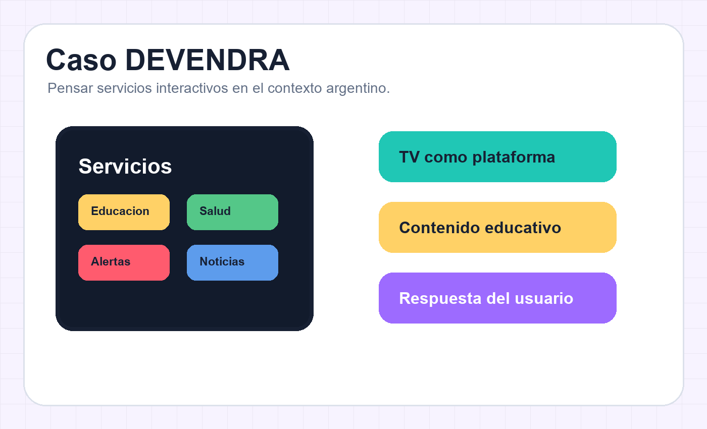

Clase 1 · Del espectador al participante
Interactividad es cuando la pantalla te escucha.
En este módulo aprendés a mirar una experiencia digital con ojos de diseñador de sistemas: qué puede hacer el usuario, cómo responde la interfaz y cuánto cambia realmente la experiencia.
Panel de misión
Tocá una estación para ver la idea.
Explicado para cualquiera
Una experiencia interactiva tiene 3 piezas
Acción
La persona hace algo: toca, elige, busca, vota, escribe o configura.
Proceso
El sistema interpreta esa acción. Decide qué mostrar, guardar o cambiar.
Feedback
La interfaz responde. Si no ves respuesta, sentís que el sistema no te escuchó.
Por qué esta clase sigue el programa
Lo formal convertido en experiencia
El módulo no es una página linda suelta: cada bloque responde a un punto del programa y prepara la actividad evaluable.
Interactividad
Se trabaja como acción, proceso y feedback para que no quede en definición memorizada.
TV digital
Se conecta ISDB-Tb, datos, Ginga y aplicaciones como ecosistema técnico.
DEVENDRA
Se usa como ejemplo argentino para imaginar servicios interactivos con sentido público.
Netflix, Flow, DIRECTV Play
Se miran por niveles, navegación, usuario, feedback y experiencia.
Interactivo principal
Los 5 niveles de interactividad
Cada nivel aumenta el poder del usuario. Hacé clic y mirá la historia en tres pasos: usuario, sistema y feedback.
Nivel 1
Reactividad
El usuario controla reproducción básica, pero no transforma el contenido.
Poder real del usuario
▶
Pausa o avanza un video.
⏱
Actualiza el estado de reproducción.
✓
La barra de progreso cambia.
Contenido formal del programa
TV digital, Ginga y DEVENDRA
Esta parte baja el concepto a la materia: la televisión digital no solo transmite video; puede transportar datos y ejecutar aplicaciones.
Paso seleccionado
ISDB-Tb
Estándar de TV digital terrestre adoptado por Argentina. Permite mejor calidad y soporte para datos adicionales.
Aplicación interactiva

Caso para entenderlo sin vueltas
DEVENDRA como puente entre idea y prototipo
En clase lo usamos así: una transmisión deja de ser solo video y se transforma en un servicio. El alumno piensa qué dato viaja, qué pantalla aparece, qué decide el usuario y qué feedback recibe.
Hay contenido principal: noticia, clase, partido, campaña o programa.
Se agrega una capa interactiva: menú, encuesta, alerta o material extra.
La persona elige y el sistema responde. Ahí aparece la interactividad real.
Museo visual
De mirar señal a usar servicios
Tocá cada imagen. La idea es ver el salto conceptual: de una TV que solo transmite, a una pantalla que puede ejecutar servicios interactivos y pedir decisiones al usuario.
TV analógica
Modelo de recepción: la señal viaja en una dirección y el usuario no modifica la experiencia desde el sistema.
Mini juego conceptual
Armá una app interactiva para TV digital
Elegí un objetivo, un dato y una respuesta del usuario. El sistema te muestra qué tipo de aplicación estás diseñando.
Objetivo
Dato
Respuesta
Resultado
App educativa con contenido ampliado
El usuario navega un menú para ampliar una clase o programa con material complementario.
Laboratorio visual
Analizá plataformas, no las mires “de gusto”
Elegí una experiencia y tocá sus zonas calientes. La clase te muestra qué mirar: intención, navegación, personalización y feedback.
Tocá los marcadores numerados sobre la pantalla. Cada uno muestra
qué mirar en una interfaz real.
Actividad evaluable
Canvas de análisis interactivo
La entrega ideal parece una lámina profesional: captura anotada, acciones del usuario, proceso del sistema, feedback, nivel de interactividad y mejora propuesta.
Captura o mockup
Elegí una plataforma audiovisual. Marcá dónde el usuario puede actuar.
5 ciclos
Para cada acción: intención, proceso probable del sistema y feedback visible.
Nivel
Clasificá cada acción del 1 al 5 y justificá con evidencia.
Puente TV digital
Relacioná el caso con TV digital, Ginga o DEVENDRA.
Mejora
Proponé una mejora interactiva: recomendador, asistente, votación o servicio.
Paquete del módulo
Todo lo que acompaña esta clase
La página es la experiencia interactiva. Estos materiales completan el módulo para estudiar, dar clase y preparar la entrega.
Clase
Contenido interactivo
Niveles de interactividad, ejemplos y lectura guiada de experiencias.
CasoTV digital y DEVENDRA
Mapa visual para conectar ISDB-Tb, Ginga, NCL/Lua y usuario.
ActividadConsigna y rúbrica
Canvas de análisis interactivo con criterios de evaluación.
LaboratorioPlataformas actuales
Pantalla guiada para mirar intención, decisión del sistema y feedback.
MateriaVolver al índice
Acceso a todos los módulos y a la evaluación integradora.